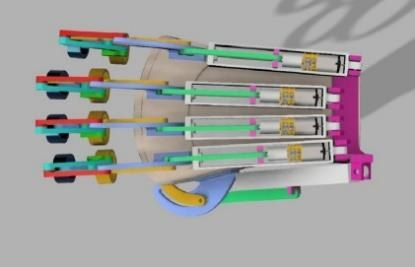

FINAL YEAR PROJECT · 2024–2025
Real-Time EMG-Based Assistive Hand Exoskeleton
Giving the hand its motion back to people living with cervical spinal cord injury. Three EMG sensors read the forearm muscles, an Arduino filters the signals, and an ESP32 sends them to a cloud model that recognises the intended gesture. Gear motors on 3D-printed finger linkages then carry it out, in real time.
>95%accuracy
~280 mslatency
4gestures
Random Forestbest classifier
EMGMachine LearningESP32 · ArduinoRobotics Control
With Mishaal Khawar, Komal Tariq and Faizan Ahmed · Advised by Engr. Zainab Munir · See the prototype →